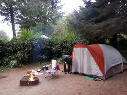

Services at West Coast Adventures 101
- Trip Planner and Concierge
- We have a strong team of planner professionals that will help you create a tailored trip down the coast. Each one of these individuals has firsthand knowledge and experience on the many routes that can be taken, and of all the possibilities that are available. Each "Adventure Buddy" has a minimum mandatory two week travel itinerary per year to keep them up to date on all of the ins and outs of the coast, so you can rest assured in their expertise. Once you’ve decided that a road trip down the coast is something that you’d like to do, one of our "Adventure Buddies" will work with you to develop a trip that is right for you. Once on the road your personal concierge will be available 24/7 by phone as your trip gets under way.
- Transportation
- While you are more than welcome to use your own vehicle, there is no need to place unwanted wear and tear on your own car. We provide you with the right wheels for your trip. Our fleet is comprised of many makes and models, for big families or small families. If you’d like to experience the West Coast on two wheels, we can provide that experience as well.
- Lodging
- What would a road trip down one of the best scenic routes in the world be without a bit of camping? West Coast Adventures 101 will take care of all of your reservations, and provide you with the best camping gear to set up shelter. If camping is not your style, or if you’d like to compliment your camping stops along the way with some more comfortable lodging, our extensive partnership with some of the best B&B’s will keep you well rested throughout your trip.